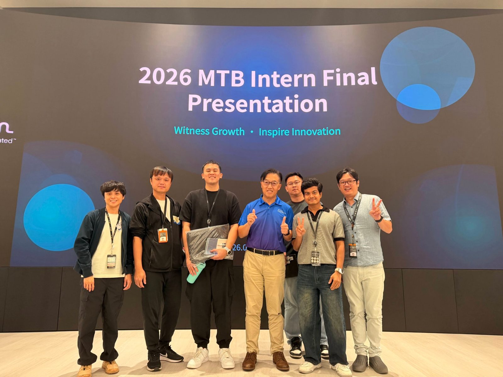
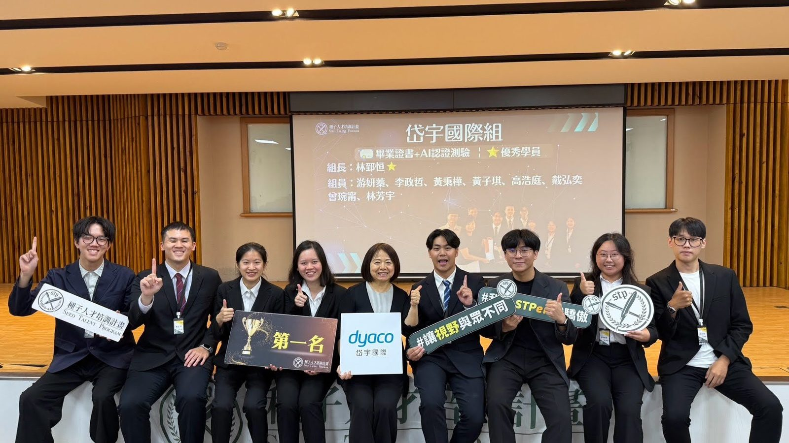
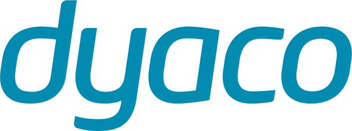

Micron Memory Taiwan 台灣美光 · Intern-Engineer, MTB PWF MRDA Equipment
台中 · FY26 暑期實習
-
以 FY26 實習專題開發 TIQ（Tool Installation & Qualification）管理與資料視覺化平台，提升設備資料的組織性、可見度與可用性。
-
將現場營運需求轉譯為結構化的視覺化方案，以 Power Apps、Power Automate 與 Power BI 設計資料處理架構與自動化流程。
-
與導師、主管及設備工程團隊跨職能協作，並向利害關係人簡報專案洞察與成果。
-
深入理解半導體製造與工程實務，並培養技術問題解決、資料驅動分析與專業溝通能力。
Best Presentation Award · 2026 Micron MTB 實習生成果發表
Microsoft Power Apps
Power Automate
Power BI
Data Visualization

2026 Micron MTB 實習生成果發表 · 與 MTB PWF MRDA 團隊合照
岱宇國際 Dyaco International · AI Project Intern, STP26 種子人才培訓計畫
台北 · 種子人才培訓計畫第 26 期企業專案
-
與團隊提案並執行「AI Coach」AI 健身姿勢矯正助理，從專案規劃、方案開發到最終簡報全程參與。
-
負責跑姿指標研究、改善建議與訓練影片資源、產品溝通及研究文件；追溯每項參考區間的來源與適用對象，把 AI 產出的數字轉成使用者看得懂、做得到的回饋。
-
以研究與測試驅動產品決策：從最初 11 項指標收斂為側面與後方視角的 6 項核心指標，因資料不足移除 overstriding，並因 30 fps 手機錄影限制排除初觸地脛骨傾角。
-
共同開發 Dyaco 跑姿 App：10–30 秒影片分析、AI 建議、訓練影片與歷史趨勢，技術棧為 Flutter、FastAPI、MediaPipe、OpenCV 與 AWS RDS MySQL。
6 月 World Café 第一名
8 月結業成果發表最佳專案獎第一名（團隊）
Flutter
FastAPI
MediaPipe
OpenCV
AWS RDS MySQL
Product Research

STP26 種子人才培訓計畫 結業成果發表 · 岱宇國際組第一名
